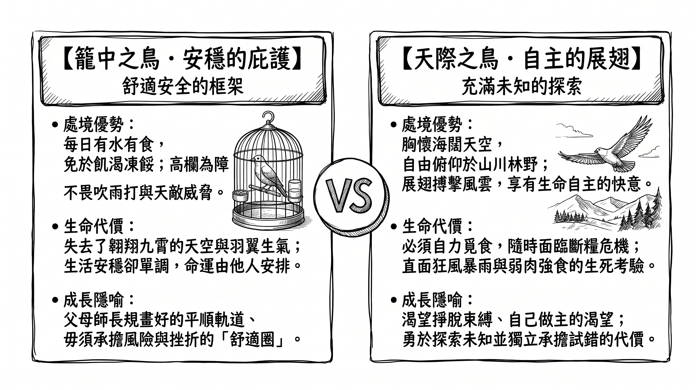

籠裡的鳥，每日有水有食、不受風吹雨打，卻失去了天空與生氣；
天空的鳥，必須自己覓食、隨時面對天敵與暴雨，卻擁有展翅翱翔的無限快意。
在成長過程中，我們往往渴望被保護的安穩（由父母師長安排好的生活），卻又嚮往自主的自由（自己做決定、承擔挑戰）。面對「舒適安全的框架」與「充滿未知但自主的探索」，你有什麼思考？
請提出你的核心論點，結合生活經驗、校園觀察或閱讀體悟，進行深入論證。你可以選擇支持其中一種生活樣態，也可以探討兩者之間的權衡、過渡與折衷，闡述你的核心主張與具體理由。
【安穩庇護 ‧ 秩序滋養】
享受規律的生活軌道，在秩序中打磨基本功。未經鍛鍊的放縱並非自由，框架提供了蓄積實力的搖籃。
【自主探索 ‧ 搏擊風霜】
勇於掙脫過度保護，跨出舒適圈。即使面對未知的失敗與狂風暴雨，唯有搏擊才能活出生命的野性與尊嚴。
【蓄力振翅 ‧ 辯證兼融】
框架與探索非零和對立。在自律框架中淬鍊羽翼，在自主長空中實踐理想。因框架而厚實，因探索而偉大。
【生命自省 ‧ 責任承擔】
探索不是叛逆，自由必須自負盈虧。看清安逸的代價與自主的重量，成為真正能夠為自己人生負責的掌舵者。
會考作答規範提醒：
※ 不必訂題（若自訂題目請寫於第一行） ‧ ※ 文體限用「論說文」，請提出明確主張並舉例論證 ‧ ※ 黑色墨水筆書寫 ‧ ※ 勿洩漏私人身分 ‧ ※ 不得使用詩歌體
萬用例轉移指南：平時素材無縫移植
框架與探索思辨雷達
雙向度評量💡 高分論說文講究「論點明確」與「辯證張力」。無論偏向安穩或探索，關鍵在於能透視背後的「自律」與「責任」。
平時素材：練習鋼琴或小提琴，前期枯燥的音階、節拍器冰冷的滴答聲，曾讓人感到窒息與束縛。
移植切入：將音階規律比喻為「鳥籠框架」。唯有前期耐住枯燥在框架中淬鍊扎實指力，後期才能在即興演奏中隨心所欲展現海闊天空的自由！
平時素材：習慣照著實驗手冊的標準步驟操作，雖然保證得分，卻毫無樂趣與驚喜。
移植切入：打破課本劃線的「安全框架」，自主發想無人涉足的題目。經歷無數次實驗失敗與焦慮，最終在獨立解決問題中體會到搏擊未知長空的極致快意。
平時素材：清晨教練安排的高強度固定課表，看似死板；但在關鍵賽事瞬息萬變的戰局中，卻能臨場隨機應變。
移植切入：框架不是扼殺創意的監獄，而是鍛造筋骨的鐵砧。在規範中磨出抗壓底氣，才能在未知的戰場上展現靈活的身手。
平時素材：從小習慣父母規劃好一切行程，直到國中接任社長，必須自己承擔活動盈虧與同儕磨擦。
移植切入：走出家庭被庇護的溫室框架，學會獨當一面。自由不是為所欲為，而是擁有直面結果、承擔試錯代價的勇氣。
句子長大術：從平淡敘述到 6 級分意境
鳥籠很安全，但鳥更喜歡在外面飛。
「問津趕行程」最強五段骨架與 40 行配速計畫
四篇 6 級分範文手風琴與深度賞析
籠中之鳥，在雕欄玉食中享有一世無憂的安穩，卻在風平浪靜中磨鈍了搏擊風雲的羽翼；天際之鳥，在風暴雷電中面臨存亡未卜的兇險，卻在海闊天空中活出了生命最野性舒展的姿態。這兩幅對比鮮明的圖景，宛如投射在我們成長路上的雙面鏡——我們既貪戀父母師長為我們構築的安全港灣，又無時無刻不渴望衝破常規、揚帆遠航。然而我認為，人生的成熟不在於安穩與自由的零和對立，而是在於明白：唯有先在框架中扎實蓄力，方能在天際中展翅高翔。
不可否認，舒適安全的框架為初生無知的羽翼提供了不可或缺的庇護。國中時期的作息規律、學科規範乃至師長的訓誡，表面上看似一具具冰冷的柵欄，限制了任性妄為的可能；實質上，這些框架正是為我們抵禦外界風雨的防護網。在心智尚未成熟、羽毛猶未豐滿之際，若輕率地將所有秩序視為枷鎖而全盤拋棄，盲目追求未經鍛鍊的「自由」，往往只會像羽翼未豐的雛鳥跌落草叢，遭現實的狂風暴雨無情摧折。框架的存在，是為了讓我們在安全無虞的環境中專注成長、吸納養分，奠定生命的基石。
然而，若沉溺於安穩的餵養而終生不願展翅，生命終將走向梁實秋筆下「苦悶蜷伏、生氣全無」的悲劇。我曾有一段時間極度依賴母親為我安排的作息表，何時讀書、何時補習、乃至於閱讀何種書籍皆按部就班。那段日子固然省心順遂，我卻漸漸感到靈魂的窒息與被動。直到國二那年，我主動爭取加入科學探究競賽，從主題發想、實驗受挫到深夜分析數據，沒有現成的標準答案，每一步都充滿了失敗的風險與焦慮。然而，當我克服一次次卡關、在發表會上侃侃而談那一刻，我真切體會到展翅翱翔的壯烈快意——那種由自己決定航道並全力以赴的生命尊嚴，是任何現成餵養都無法給予的珍寶。
生命的最佳姿態，絕非永遠躲在籠中作一隻受庇護的寵鳥，亦非毫無準備地在暴風雨中盲目撞擊。智慧的成長者，懂得在安全框架中淬鍊出堅韌的筋骨與品格，待狂風吹拂之際，便能從容振翅，迎向海闊天空的浩瀚未知。我們因框架而厚實，因探索而偉大。
古人云：「養怡之福，可得永年。」然而，若這份安怡必須以囚禁靈魂、剪去羽翼為代價，這樣的生命究竟是幸福，還是一種精緻的委靡？籠中的鳥兒享受著免於飢渴的安逸，卻也永遠告別了穿雲破霧的壯闊；天際的鳥兒固然常與飢餓暴雨搏鬥，但那一身光潤的羽毛與啼鳴時的宏亮，方是生命昂揚的本相。在成長的十字路口，我堅信：人寧可冒著風雨去未知中探索，也不願在舒適安全的框架裡消磨銳氣。
過度安全的框架，往往是扼殺創造力與生命韌性的溫柔陷阱。在父母師長細密織就的保護網下，我們習慣了衣來伸手、按部就班，漸漸失去了做決定的勇氣與面對挫折的免疫力。正如梁實秋先生筆下的籠鳥，久居欄內，終致「不知飛翔之樂」。倘若青少年的每一步都被規畫得天衣無縫，我們何時才能學會在泥濘中站起？何時才能培養出獨當一面的智慧？唯有勇敢跨出框架，生命才會在真實的碰撞中長出堅韌的厚繭。
我曾在國一時深陷於安穩的泥淖中。那時我只讀課本劃線的重點，只做老師指定的題庫，生活猶如一條筆直卻單調的軌道。直到升上國二，我決定打破這層框架，報名參加難度極高的全縣英語演講比賽。備賽期間，我必須自己蒐集時事、反覆修改講稿，更在初次模擬時緊張得語無倫次。那段日子充滿了未知的焦慮與自我懷疑，但也正是那次「自討苦吃」的歷程，逼得我學會自我糾錯、掌控全場節奏。當我最終站在聚光燈下自信開口時，我體會到了前所未有的生命快感——那是衝破牢籠後，首次觸摸到藍天的寬廣。
生命的價值，從不在於一帆風順的長度，而在於振翅高飛的高度。溫室裡的牡丹固然嬌貴，卻永遠無法體會懸崖邊青松搏擊風雪的豪邁。讓我們拒絕成為那一隻羽毛華麗卻步履蹣跚的籠中鳥，昂首振翅，飛向充滿無限可能的長天萬里！
在崇尚個性張揚與自由自主的當下，人們往往對「框架」避之唯恐不及，將其視為囚禁靈魂的鳥籠；相對地，對「自主探索」則冠以浪漫的光環。然而，靜心沉思：沒有規矩，何以成方圓？沒有堅固的巢穴抵禦初春的料峭，弱小的雛鳥何以安然長成？我認為，青年時期的框架絕非剝奪自由的枷鎖，而是為未來遠航奠定根基的堅實甲板。
真正的自由，絕非脫韁野馬般的任性放縱，而是建立在高度自律與扎實能力之上的從容選擇。如果一隻幼鳥在尚未學會滑翔、辨識風向之前便急於離巢，等待它的往往不是海闊天空，而是粉身碎骨的危險。同理，國中階段各項看似嚴格的規訓——課堂專注、作息規律、日常修為的規範，實則是幫助我們在混亂的世界中建立內在秩序。這正如周敦頤在〈愛蓮說〉中讚賞蓮花「中通外直，不蔓不枝」，正因為蓮花有其內在挺拔的規範與自持，才能在污濁泥淖中屹立不搖、香遠益清。
回想我練習鋼琴的歷程，初期那枯燥乏味的音階、節拍器冰冷的滴答聲，曾讓我痛苦得幾欲放棄，甚至抱怨古典音樂的嚴苛框架扼殺了我的靈感。然而，當我耐著性子在指法框架中日復一日磨礪，打下扎實的指力與節奏感後，我驚喜地發現，自己竟能在即興演奏中隨心所欲地傾注情感。那一刻我徹底領悟：若無前期嚴苛框架的束縛與淬鍊，就絕不可能有後期指尖游刃有餘的絕對自由。框架不是終點，而是通往自由唯一的窄門。
毋須怨尤頭頂的屋簷，亦毋須急於斬斷腳下的立足點。在生命的春天，且讓我們珍惜框架中的涵養與雕琢；當我們在規律中把羽翼鍛鍊得如鋼似鐵，天空，自會向我們敞開無盡的浩瀚。
小時候讀童話，總羨慕那些在屋簷下受盡寵愛、被精緻鳥籠呵護的青鳥；長大後才讀懂梁實秋筆下籠鳥那一雙憂鬱呆滯的眼睛。在成長的旅途上，我們每個人何嘗不曾是一隻習慣躲在父母屋簷下的雛鳥？定時的飯菜、整理好的書包、被安排妥當的升學藍圖，構築起一座看似完美卻無比狹隘的「安全城堡」。然而，當我們的心靈逐漸滋長出獨立的渴望，一個嚴肅的課題便橫亙眼前：我們究竟是要安於這片遮風蔽雨的小天地，還是要勇敢飛向真實的世界？
不可否認，待在屋簷下是省心而舒適的。那裡沒有挫折的寒風，沒有人際摩擦的暴雨，每一步都有長輩的經驗為我們墊底。然而，長期的過度安穩，往往在不知不覺中剝奪了一個人生命最可貴的「自我效能感」。若任由時間在無知無覺的安逸中流逝，我們便永遠無法體察每一顆時間碎珠在自我奮鬥中所折射出的燦爛光芒。依賴他人所構築的安全，本質上是一種脆弱的假象。
升上八年級後，我第一次嘗試向父母提出「自主管理時間與手機」的請求。起初，沒有了母親在耳邊的催促與督促，我曾因自制力不足而熬夜滑手機、導致隔天小考失常。在懊惱與挫敗的淚水中，我真切感受到了「自主的代價」——原來自己做主，意味著必須自己承擔所有的後果。但我沒有退回被管教的舒適圈，而是主動制定番茄鐘工作法，學會拒絕誘惑。當我在第二次段考靠著自己的規劃重回正軌時，父母眼中的欣慰與我自己內心的踏實，是我成長以來收穫最珍貴的勳章。
真正的成熟，不是魯莽地砸碎鳥籠宣告叛逆，而是懷抱著感恩的心走出庇護的屋簷，用自己的雙翼去丈量天地。當我們敢於承擔探索未知的風雨，每一隻渴望自由的青鳥，終將在長空中找到屬於自己的座標。
實戰成語庫與名言佳句錦囊
舒適圈與安逸代價（反思類）
秩序規律與蓄力厚積（積累類）
勇於探索與搏擊風雨（行動類）
責任擔當與成熟超拔（哲思類）
互動寫作工作坊 & AI 寫作教練
Before / After 升級對照卡
💡 採納純淨美句，標籤供技巧觀摩--
--
我的作文累積篇章（累句成篇）
採納教練潤飾美句，逐步拼接成完整長文